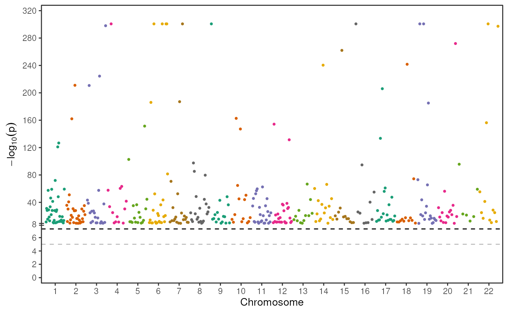

create a manhattan plot given a study accession and a catalog
Examples
data("gwc_110626", package="op2workshop")
make_manh("GCST90002322", gwc_110626)
#> Loading required namespace: gwascat
#> Warning: Replacing p-value of 0 with the minimum.
